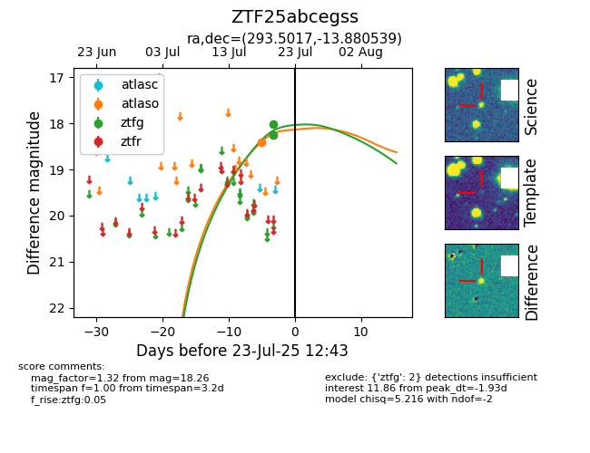

Target ZTF25abcegss at 2025-07-23 12:43, see:
FINK: fink-portal.org/ZTF25abcegss
Lasair: lasair-ztf.lsst.ac.uk/objects/ZTF25abcegss
ALeRCE: alerce.online/object/ZTF25abcegss
alt names
ZTF25abcegss (ztf,fink)
coordinates:
equatorial (ra, dec) = (293.5017,-13.88054)
galactic (l, b) = (25.0694,-15.60173)
photometry
last atlaso=18.40, ztfg=18.26
1 atlaso, 2 ztfg detections
